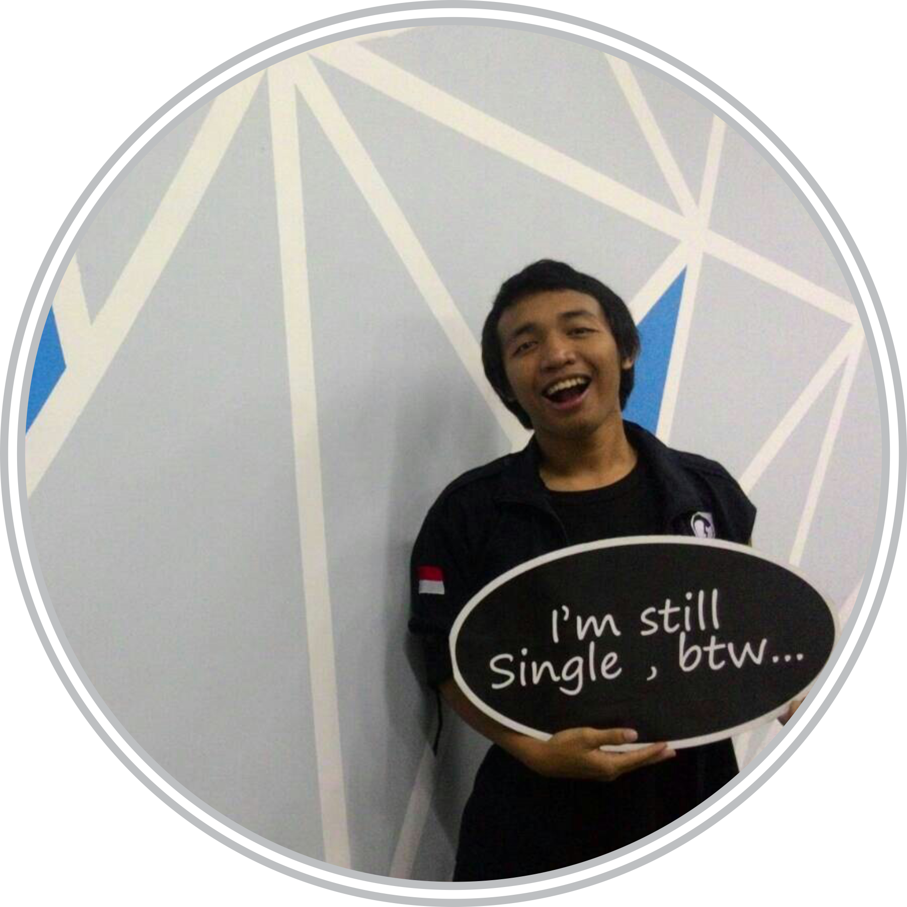

Product
Datang untuk membuat perubahan, Gamel-AR menawarkan aplikasi inovatif menggunakan teknologi mutakhir tanpa melupakan warisan budaya tradisional Indonesia. Gamel-AR hadir sebagai perpaduan alat musik asli Indonesia, Gamelan, dengan teknologi Augmented Reality yang dapat membawa anda menabuh Gamelan dengan sensasi berbeda.
Gamel-AR siap mengantarkan Gamelan sedekat sentuhan jari, hanya dengan smartphone Android kesayangan anda.
Budaya merupakan kata yang tidak bisa dipisahkan dari suatu negara, terutama untuk negara Indonesia yang dikenal memiliki keanekaragaman seni dan budaya dari Sabang sampai Merauke. Namun kenyataannya, perkembangan budaya di Indonesia semakin hari semakin berkurang akibat pengaruh globalisasi.
Terdapat beberapa faktor yang menyebabkan kebudayaan Indonesia cenderung dilupakan, salah satunya adalah konsumsi gadget yang berlebihan, khususnya smartphone. Dengan segala kemudahan dan keunggulan, smartphone menjadi perangkat yang paling sering diakses di watu luang. Memanfaatkan potensi tersebut, dibuatlah aplikasi augmented reality berbasis Android yang bernama Gamel-AR.
Gamel-AR adalah aplikasi yang beroperasi pada perangkat dengan sistem operasi Android. Aplikasi ini dibuat menggunakan metode markerless Augmented Reality, sehingga tidak diperlukan marker untuk menampilkan 3D gamelan. Selain itu, aplikasi ini juga memiliki fitur playable interactive sehingga user dapat memainkan gamelan yg ditampilkan.
Why must Gamel-AR?
-
Mudah digunakan
Dapat digunakan di mana saja, kapan saja, dan oleh semua pengguna android.
-
Menambah Wawasan
Media Edukatif untuk mengenalkan warisan budaya gamelan
-
Tidak membutuhkan alat tambahan
Markerless AR memungkinkan untuk menggunakan objek apapun sebagai Marker
-
Dapat dimainkan
Fitur untuk menghasilkan suara mirip dengan aslinya
Download
Aplikasi Gamel-AR dapat tersedia dalam berbagai platform yaitu Android OS, Apple iOS, dan Windows Phone. Semua tersedia dan dapat diakses secara gratis pada perangkat mobile anda. Anda dapat mengunduhnya melalui link download berikut ini:
About Us
Kelompok A merupakan kelompok yang terbentuk dalam rangka memenuhi tugas mata kuliah Pemrograman Jaringan dan Web. Kelompok ini terdiri dari 8 mahasiswa angkatan 2013 dan 2014 Departemen Teknik Elektro dan Teknologi Informasi Fakultas Teknik UGM. Berikut ini adalah profil dari masing-masing mahasiswa:
Member
A'isya Nur Aulia |
 |
Aulia Inan Nur |
|
|---|---|---|---|
Ilham Endianto |
 | Luthfan Nur Ubai |
|
Rafi Fahlevi |
Titus Alfredo |
||
Aditya Kurnia P |
Muhammad Iqbal |
Back to the top